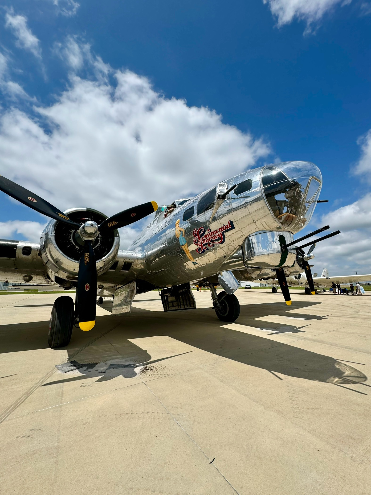

Hi, I'm Adhith
I design tools that thousands of people rely on to do high-stakes work.
Most recently I led UX for an AI-powered forecasting platform at Albertsons, replacing manual Excel workflows across merchant and finance teams. Before that I designed pharmacy delivery fulfillment for Sam's Club and Walmart, from discovery through launch across pilot states, in partnership with large engineering teams.
My background in industrial design shapes how I work. I care about how human-centered principles translate into technology that helps people complete real tasks and produce better work.
I am comfortable in ambiguity, in enterprise constraints, and in negotiating tradeoffs with engineering, product, and business partners, and I bring AI in as a collaborator.
Beyond work
Outside of design I build and ride bikes, bake, and spot planes whenever I get the chance.


